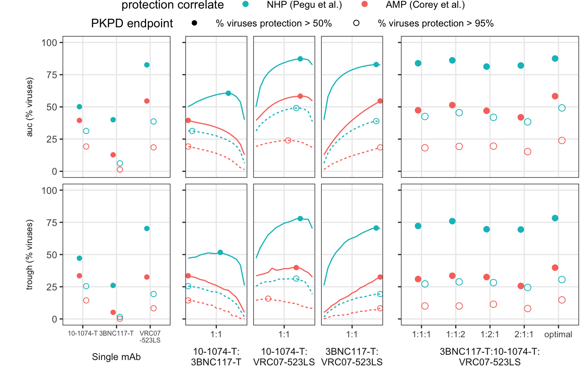

{kind=link}
{kind=link}
{kind=link}
{kind=link}
{kind=link}
{kind=link}
Ratio optimization for 3BNC117, 10-1074, theoretical-mutants, and VRC07523-LS
Bryan Mayer
2022-01-05
Last updated: 2022-03-17
Checks: 7 0
Knit directory: pkpd-bnab-project/
This reproducible R Markdown analysis was created with workflowr (version 1.7.0). The Checks tab describes the reproducibility checks that were applied when the results were created. The Past versions tab lists the development history.
Great! Since the R Markdown file has been committed to the Git repository, you know the exact version of the code that produced these results.
Great job! The global environment was empty. Objects defined in the global environment can affect the analysis in your R Markdown file in unknown ways. For reproduciblity it’s best to always run the code in an empty environment.
The command set.seed(20201117) was run prior to running the code in the R Markdown file. Setting a seed ensures that any results that rely on randomness, e.g. subsampling or permutations, are reproducible.
Great job! Recording the operating system, R version, and package versions is critical for reproducibility.
Nice! There were no cached chunks for this analysis, so you can be confident that you successfully produced the results during this run.
Great job! Using relative paths to the files within your workflowr project makes it easier to run your code on other machines.
Great! You are using Git for version control. Tracking code development and connecting the code version to the results is critical for reproducibility.
The results in this page were generated with repository version 24022f6. See the Past versions tab to see a history of the changes made to the R Markdown and HTML files.
Note that you need to be careful to ensure that all relevant files for the analysis have been committed to Git prior to generating the results (you can use wflow_publish or wflow_git_commit). workflowr only checks the R Markdown file, but you know if there are other scripts or data files that it depends on. Below is the status of the Git repository when the results were generated:
Ignored files:
Ignored: .DS_Store
Ignored: .Rhistory
Ignored: .Rproj.user/
Ignored: analysis/.DS_Store
Ignored: analysis/.Rhistory
Ignored: code/.DS_Store
Ignored: code/python/.DS_Store
Ignored: code/python/.ipynb_checkpoints/
Ignored: code/tmp-compare-old-new.R
Ignored: code/tmp-hill-exploration.R
Ignored: code/tmp-ratio-grid-search.R
Ignored: data/.DS_Store
Ignored: output/.DS_Store
Ignored: output/sim_results/.DS_Store
Ignored: output/sim_results/grid_full_mean2020-11-29.csv
Ignored: output/sim_results/opt_ratio_summary.csv
Ignored: output/sim_results/opt_ratio_wide.csv
Ignored: output/sim_results/optimum_wide.csv
Untracked files:
Untracked: Untitled.R
Untracked: correlations-optimal.R
Untracked: data/dose10_scrape.csv
Untracked: data/dose30_scrape.csv
Untracked: data/jvi.01909-20-s0001.xlsx
Untracked: sim-reproducibility-test.R
Note that any generated files, e.g. HTML, png, CSS, etc., are not included in this status report because it is ok for generated content to have uncommitted changes.
These are the previous versions of the repository in which changes were made to the R Markdown (analysis/empirical-case-study.Rmd) and HTML (docs/empirical-case-study.html) files. If you’ve configured a remote Git repository (see ?wflow_git_remote), click on the hyperlinks in the table below to view the files as they were in that past version.
| File | Version | Author | Date | Message |
|---|---|---|---|---|
| Rmd | 24022f6 | Bryan | 2022-03-17 | add supp eps figures; no other changes |
| html | f1a3866 | Bryan | 2022-03-15 | Build site. |
| Rmd | bb4f245 | Bryan | 2022-03-15 | final version of code |
| Rmd | 929c62c | Bryan | 2022-03-13 | data documentation |
| Rmd | 41337fd | Bryan | 2022-03-13 | start of documentation cleanup |
| Rmd | a3b37fd | Bryan | 2022-01-04 | method figures for empirical |
| Rmd | c16f44a | Bryan | 2021-12-08 | updates prior to revision |
| Rmd | 803d29e | Bryan | 2021-07-11 | updated case study for final manuscript |
| Rmd | 3009982 | Bryan | 2021-03-23 | scripts for december draft of paper |
Overview
library(tidyverse)
library(kableExtra)
library(readxl)
library(cowplot)
library(viridis)
theme_set(theme_bw())
source("code/empirical-opt-funs.R")
source("code/neutralization-funs.R")
theme_set(theme_bw() +
theme(legend.position = "top", legend.key.width = unit(1, "cm"),
panel.grid.minor = element_blank()))
yaxis_off = theme(axis.title.y = element_blank(),
axis.text.y = element_blank(),
strip.text.y = element_blank()
)
ic50_cutoff = 10
ic50_breaks = c(10^c(-3:1), ic50_cutoff * 10)
ic50_labels = c(0.001, 0.01, 0.1, 1, 10, "resistant")
parental_ratio_lab = "3BNC117:total dose"
parental_ratio_breaks = 0:4/4
parental_ratio_labels = c("Only\n10-1074", 1:3/4, "Only\n3BNC117")
ls_ratio_lab = "3BNC117-T:total dose"
ls_ratio_breaks = 0:4/4
ls_ratio_labels = c("Only\n10-1074-T", 1:3/4, "Only\n3BNC117-T")
ic50_title = expression(paste("IC"[50]," (", mu, "g/mL)"))In this case study, we perform ratio optimization on three bnabs, 3BNC117, 10-1074, and VRC07-523LS. We use theoretical LS variants of these antibodies by extending their half-live by 2-fold: 3BNC117-T and 10-1074-T. We optimize specifically using potency reduction dose-response relationships derived from Pegu and AMP studies. The protection is estimates for each bnab and combined using an independence model (ie, Bliss-Hill). For these theoretical trials, we consider a simple design of 600 mg administered subcutaneously with a 3 month follow-up window.
PK
Methods and citations are outlined in the paper.
parental_data = read_csv("data/empirical-pk-data/PK_parental_1074_3bnc.csv") %>%
ungroup() %>%
dplyr::select(analyte, parameter, value) %>%
dplyr::filter(parameter %in% c("V1", "V2", "Cl", "Q")) %>%
spread(parameter, value)
tls_data = parental_data %>%
mutate(
Cl = Cl/3,
analyte = paste0(analyte, "-T")
)
vrc07_data = vrc_res <- read_table2("data/empirical-pk-data/PK_vrc07.txt") %>%
janitor::clean_names() %>%
mutate(analyte = "VRC07-523LS") %>%
dplyr::select(analyte, parameter = variability, value = finalestimate)%>%
spread(parameter, value) %>%
rename(Cl = CL, ka = KA, V1 = V2, V2 = V3)
all_pk = parental_data %>%
bind_rows(tls_data) %>%
bind_rows(vrc07_data) %>%
mutate(F1 = zoo::na.locf(F1), ka = zoo::na.locf(ka)) %>%
rowwise() %>%
mutate(
rate_parms = list(convert_2cmp_pkparms(CL = Cl, Vc = V1, Vp = V2, Q = Q)),
HL_elimination = log(2)/rate_parms$beta_parm
) %>%
ungroup()
all_pk %>%
dplyr::select(-rate_parms) %>%
rename(Vc = V1, Vp = V2, bioavailability = F1, `HL (days)` = HL_elimination) %>%
gather(parameter, value, -analyte) %>%
spread(analyte, value) %>%
mutate(parameter = factor(parameter,
levels = c("Vc", "Cl", "Q", "Vp", "ka", "bioavailability", "HL (days)"))
) %>%
arrange(parameter) %>%
select(parameter, `10-1074`, `3BNC117`, `10-1074-T`, `3BNC117-T`, `VRC07-523LS`) %>%
kable(booktabs = T, digits = 2, caption = "This is Supp. Table 1") %>%
kable_styling(full_width = F) | parameter | 10-1074 | 3BNC117 | 10-1074-T | 3BNC117-T | VRC07-523LS |
|---|---|---|---|---|---|
| Vc | 4.50 | 5.02 | 4.50 | 5.02 | 1.89 |
| Cl | 0.26 | 0.65 | 0.09 | 0.22 | 0.09 |
| Q | 0.67 | 2.19 | 0.67 | 2.19 | 0.41 |
| Vp | 3.29 | 8.65 | 3.29 | 8.65 | 2.34 |
| ka | 0.39 | 0.39 | 0.39 | 0.39 | 0.39 |
| bioavailability | 0.46 | 0.46 | 0.46 | 0.46 | 0.46 |
| HL (days) | 22.61 | 16.46 | 64.57 | 45.62 | 35.76 |
pk_window = seq(0, 84, by = 0.5)
example_pk_dat = all_pk %>%
unnest(cols = rate_parms) %>%
mutate(dose = 600) %>%
create_pk(pk_window)
write_csv(example_pk_dat, "output/empirical-opt/example-empirical-pk-dat.csv")
pk_pl_all = example_pk_dat %>%
ggplot(aes(x = time, y = conc, color = analyte)) +
geom_line() +
labs(y = "Concentration (ug/mL; 600 mg dose)", x = "days")
pk_pl_allPopulation PK for analytes with 600 mg administration.
| Version | Author | Date |
|---|---|---|
| f1a3866 | Bryan | 2022-03-15 |
man_pk_pl = all_pk %>%
dplyr::filter(!analyte %in% c("10-1074", "3BNC117")) %>%
unnest(cols = rate_parms) %>%
mutate(dose = 600) %>%
create_pk(pk_window) %>%
ggplot(aes(x = time, y = conc, color = analyte)) +
geom_line() +
labs(y = expression(paste("concentration (",mu,"g/mL; 600 mg dose)")), colour = "", x = "days") +
theme(legend.direction = "vertical", legend.position = c(1,1),
legend.justification = c(1.05,1.05),
legend.key.height = unit(0.5, "cm"),
legend.margin = margin(t = -10),
legend.box.background = element_rect(colour = "black"),
)
man_pk_pl
| Version | Author | Date |
|---|---|---|
| f1a3866 | Bryan | 2022-03-15 |
PD
Titer vs. protection dose-response
NHP meta-analysis (Pegu et al.)
# there was as warning in predict that seems unrelated to the predictions.
# Warning messages:
# 1: In pt(x, df.residual(object)) : NaNs produced
# 2: In pt(x, df.residual(object)) : NaNs produced
pegu_dat = tibble(
titer = c(91, 219, 685),
neut = c(0.5, 0.75, 0.95)
)
empirical_pd_fit = drc::drm(neut ~ titer, data = pegu_dat,
fct = drc::LL.5(names = c("slope", "lower", "upper",
"inflection", "asymmetry"),
fixed = c(NA, 0, 1, NA, NA)))
# empirical_4pl_fit = drc::drm(neut ~ titer, data = pegu_dat,
# fct = drc::LL.4(names = c("slope", "lower", "upper",
# "inflection"),
# fixed = c(NA, 0, 1, NA)))
pegu_pl = tibble(
titer = 10^seq(-0.1, 4.5, length = 100),
invitro = 1 - (1 + titer)^(-1),
empirical = predict(empirical_pd_fit, data.frame(titer = titer)),
potency = 1 - (1 + titer/91)^(-1)
) %>%
gather(model, neut, invitro, empirical, potency) %>%
ggplot(aes(x = titer, y = neut * 100)) +
geom_line(aes(colour = model, linetype = model)) +
geom_point(data = pegu_dat) +
scale_y_continuous(breaks = 0:10 * 10) +
labs(y = "empirical protection (%) (Pegu et al.)",
colour = "", linetype = "") +
scale_color_manual(breaks = c("invitro", "empirical", "potency"),
labels = c("In vitro neutralization", "5PL",
"Potency reduction"),
values = c("black", "black", "gray")) +
scale_linetype_manual(breaks = c("invitro", "empirical", "potency"),
labels = c("In vitro neutralization", "5PL",
"Potency reduction"),
values = c(2, 1, 1)) +
scale_x_log10(breaks = 10^(0:4), labels = as.character(10^(0:4))) +
theme(axis.text.x = element_text(size = 8),
legend.key.width = unit(0.5, "cm"),
legend.key.height = unit(0.5, "cm"),
legend.margin = margin(t = -10,0,0,0),
legend.box.background = element_rect(colour = "black"),
legend.position = c(1, 0), legend.text = element_text(size = 7),
legend.direction = "vertical",
legend.justification = c(1.01, -.10))
pegu_pl
| Version | Author | Date |
|---|---|---|
| f1a3866 | Bryan | 2022-03-15 |
AMP (Corey et al.)
amp_conc_data = tribble(
~dose_mgkg, ~study, ~n, ~peak, ~midpoint, ~trough,
10, 704, 895, 65.7, 23.1, 5.8,
30, 704, 894, 212, 55.1, 15.4,
10, 703, 642, 88.9, 19.8, 4.7,
30, 703, 645, 257.9, 44.7, 8.3
)
amp_conc_avg = amp_conc_data %>%
mutate(weight = n / sum(n)) %>%
summarize(across(c(peak, midpoint, trough), ~sum(. * weight)), .groups = "drop")
amp_dat_all = read_excel("data/nejm_fig3a.xlsx") %>%
crossing(time = c("peak", "midpoint", "trough")) %>%
left_join(gather(amp_conc_avg, time, mean_conc, midpoint, peak, trough), by = "time") %>%
mutate(
neut = pe/100,
id80 = mean_conc/ic80,
titer = 4 * id80
)
amp_dat = dplyr::filter(amp_dat_all, time == "midpoint")
amp_pd_fit = drc::drm(neut ~ titer, data = amp_dat,
fct = drc::LL.5(names = c("slope", "lower", "upper",
"inflection", "asymmetry"),
fixed = c(NA, 0, 1, NA, NA)))
# 370
amp_id50 = drc::ED(amp_pd_fit, 50, display = F)[[1]]
amp_id95 = drc::ED(amp_pd_fit, 95, display = F)[[1]]
amp_pl = tibble(
titer = 10^seq(-0.1, 4.5, length = 100),
invitro = 1 - (1 + titer)^(-1),
empirical = predict(amp_pd_fit, data.frame(titer = titer)),
potency = 1 - (1 + titer/370)^(-1)
) %>%
gather(model, neut, invitro, empirical, potency) %>%
ggplot(aes(x = titer, y = neut * 100)) +
geom_line(aes(colour = model, linetype = model)) +
geom_point(data = amp_dat) +
scale_y_continuous(breaks = 0:10 * 10) +
labs(y = "empirical protection (%) (AMP)",
colour = "", linetype = "") +
scale_color_manual(breaks = c("invitro", "empirical", "potency"),
labels = c("In vitro neutralization", "5PL",
"Potency reduction"),
values = c("black", "black", "gray")) +
scale_linetype_manual(breaks = c("invitro", "empirical", "potency"),
labels = c("In vitro neutralization", "5PL",
"Potency reduction"),
values = c(2, 1, 1)) +
scale_x_log10(breaks = 10^(0:4), labels = as.character(10^(0:4))) +
theme(axis.text.x = element_text(size = 8),
legend.key.width = unit(0.5, "cm"),
legend.key.height = unit(0.5, "cm"),
legend.margin = margin(t = -10,0,0,0),
legend.box.background = element_rect(colour = "black"),
legend.position = c(1, 0), legend.text = element_text(size = 7),
legend.direction = "vertical",
legend.justification = c(1.01, -.10))
amp_pl
| Version | Author | Date |
|---|---|---|
| f1a3866 | Bryan | 2022-03-15 |
Protection estimation
Concentration-based protection estimates represented as IIP.
conc_range = 10^(seq(-1, 3, length = 50))
empirical_iip = map_df(conc_range, function(i) {
pd_data %>%
mutate_if(is.numeric, ~ (-log10(1 - empirical_pd_fun(i / .x, mod5pl = empirical_pd_fit)))) %>%
gather(analyte, iip, -subtype, -Reference, -Virus) %>%
group_by(analyte) %>%
summarize_at(vars(iip),
list(mean = mean, median = median,
min = min, max = max,
lower95 = ~quantile(., .025),
upper95 = ~quantile(., 0.975))
) %>%
mutate(concentration = i,
outcome = "Pegu est")
})
amp_iip = map_df(conc_range, function(i) {
pd_data %>%
mutate_if(is.numeric, ~ (-log10(1 - empirical_pd_fun(i / .x, mod5pl = amp_pd_fit)))) %>%
gather(analyte, iip, -subtype, -Reference, -Virus) %>%
group_by(analyte) %>%
summarize_at(vars(iip),
list(mean = mean, median = median,
min = min, max = max,
lower95 = ~quantile(., .025),
upper95 = ~quantile(., 0.975))
) %>%
mutate(concentration = i,
outcome = "AMP est")
})
raw_iip = map_df(conc_range, function(i) {
pd_data %>%
mutate_if(is.numeric, ~ (-log10(1 - titer2neut(i / .x)))) %>%
gather(analyte, iip, -subtype, -Reference, -Virus) %>%
group_by(analyte) %>%
summarize_at(vars(iip),
list(mean = mean, median = median,
min = min, max = max,
lower95 = ~quantile(., .025),
upper95 = ~quantile(., 0.975))
) %>%
mutate(concentration = i,
outcome = "in vitro")
})
marginal_iip_pl = empirical_iip %>%
bind_rows(raw_iip) %>%
bind_rows(amp_iip) %>%
ggplot(aes(x = concentration, y = mean, colour = analyte, linetype = outcome)) +
geom_hline(yintercept = -log10(1 - c(0.5, 0.95, 0.99)), linetype = "dotted", size = 0.25) +
geom_line() +
scale_x_log10(breaks = 10^(-1:3), labels = as.character(10^(-1:3))) +
labs(y = "mean iip", linetype = "") +
scale_linetype_manual(breaks = c("AMP est", "Pegu est", "in vitro"), values = c(1,4,3)) +
annotate("text", x = 1000, y = -log10(1 - c(0.5, 0.95, 0.99)),
label = c("50%", "95%", "99%"), vjust = 0) +
theme(legend.box = "vertical")
marginal_iip_pl
| Version | Author | Date |
|---|---|---|
| f1a3866 | Bryan | 2022-03-15 |
#drc::ED(empirical_pd_fit, .5, type = "absolute")
# 91
#drc::ED(empirical_pd_fit, .95, type = "absolute")
# 685
empirical_coverage = map_df(conc_range, function(i) {
pd_data %>%
mutate_if(is.numeric, ~ (i / .x)) %>% # titer
gather(analyte, titer, -subtype, -Reference, -Virus) %>%
group_by(analyte) %>%
summarize_at(vars(titer),
list(
neut_50 = ~(mean(.x > 1)),
pegu_50 = ~(mean(.x > 91)),
amp_50 = ~(mean(.x > amp_id50)),
neut_95 = ~(mean(.x > neut2titer(.95))),
pegu_95 = ~(mean(.x > 685)),
amp_95 = ~(mean(.x > amp_id95))
)
) %>%
mutate(concentration = i)
}) %>%
gather(coverage, prop, neut_50:amp_95) %>%
separate(coverage, into = c("outcome", "level"), sep = "_") %>%
mutate(
prot_lab = factor(outcome,
levels = c("neut", "pegu", "amp"),
labels = c("In vitro neutralization", "In vivo protection (NHP)", "In vivo protection (AMP)")
),
level_lab = case_when(
level == "50" ~ "% viruses > 50%",
level == "95" ~ "% viruses > 95%"
)
)
marg_cov_pl = empirical_coverage %>%
ggplot(aes(x = concentration, y = prop * 100, colour = analyte)) +
geom_step() +
scale_x_log10(breaks = 10^(-1:3), labels = as.character(10^(-1:3))) +
labs(y = "", x = expression(paste("concentration (", mu, "g/mL)"))) +
facet_grid(level_lab~prot_lab, switch = "y") +
theme(strip.placement = "outside",
strip.text.y = element_text(size = 12), strip.background.y = element_blank())
marg_cov_pl
| Version | Author | Date |
|---|---|---|
| f1a3866 | Bryan | 2022-03-15 |
PD summary figures
NHP meta-analysis and AMP dose-response
# same warning as before
dr_labels = tibble(
breaks = c("invitro", "pegu_empirical", "pegu_potency", "amp_empirical", "amp_potency"),
labels = c("In vitro neutralization", "NHP 5PL", bquote("NHP potency reduction (" *rho*" = 91)"),
"AMP 5PL", bquote("AMP potency reduction (" *rho*" = 370)"))
)
amp_pegu_dr = tibble(
titer = 10^seq(-0.1, 4.5, length = 100),
invitro = 1 - (1 + titer)^(-1),
pegu_empirical = predict(empirical_pd_fit, data.frame(titer = titer)),
pegu_potency = 1 - (1 + titer/91)^(-1),
amp_empirical = predict(amp_pd_fit, data.frame(titer = titer)),
amp_potency = 1 - (1 + titer/370)^(-1)
) %>%
gather(model, neut, invitro:amp_potency) %>%
ggplot(aes(x = titer, y = neut * 100)) +
geom_line(aes(colour = model, linetype = model)) +
geom_point(data = pegu_dat, colour = "blue") +
geom_point(data = amp_dat, colour = "red") +
scale_y_continuous(breaks = 0:10 * 10) +
labs(y = "empirical protection (%)",
colour = "", linetype = "") +
scale_color_manual(breaks = dr_labels$breaks,
labels = dr_labels$labels,
values = c("black", "blue", alpha("blue", 1), "red", alpha("red", 1))
) +
scale_linetype_manual(breaks = dr_labels$breaks,
labels = dr_labels$labels,
values = c(2, 1, 3, 1, 3)) +
scale_x_log10(breaks = 10^(0:4), labels = as.character(10^(0:4))) +
theme(axis.text.x = element_text(size = 8),
legend.key.width = unit(0.5, "cm"),
legend.key.height = unit(0.5, "cm"),
legend.margin = margin(t = -10,0,0,0),
legend.box.background = element_rect(colour = "black"),
legend.position = c(1, 0), legend.text = element_text(size = 7),
legend.direction = "vertical",
legend.justification = c(1.01, -.10))
amp_pegu_drSupp. Fig. 3
| Version | Author | Date |
|---|---|---|
| fc6f296 | Bryan | 2022-03-15 |
PD input data for 3 bnabs
top_row = plot_grid(man_pk_pl, ic50_pl + theme(axis.text.x = element_text()),
align = "h", axis = "t", nrow = 1,
rel_widths = c(1, 1),
labels = c("A", "B"), vjust = 1, hjust = 0)
plot_grid(top_row, marg_cov_pl + theme(legend.position = "none"), labels = c("", "C"),
rel_heights = c(1.75, 2), nrow = 2)Supp. Fig. 5
| Version | Author | Date |
|---|---|---|
| fc6f296 | Bryan | 2022-03-15 |
Ratio optimizations
Use independence model: 1 - prod (1 - x)
Setup
models = tibble(
model = list(empirical_pd_fit, amp_pd_fit),
label = c("pegu", "amp")
)
dose_ratio_list = seq(0, 1, length = 15)
total_ratio = length(dose_ratio_list)
full_double_analyte_list = tibble(
mab1 = c(dose_ratio_list, dose_ratio_list, rep(0, total_ratio)),
mab2 = c(1 - dose_ratio_list, rep(0, total_ratio), 1 - dose_ratio_list),
mab_set = c(rep("10-1074-T:3BNC117-T", total_ratio),
rep("3BNC117-T:VRC07-523LS", total_ratio),
rep("10-1074-T:VRC07-523LS", total_ratio)
)
)
triple_parms = all_pk %>%
unnest(cols = rate_parms) %>%
dplyr::filter(analyte %in% c("10-1074-T", "3BNC117-T", "VRC07-523LS"))
outcome_labels = tibble(
levels = c("coverage_50", "coverage_95", "mean_iip"),
labels = c("% viruses protection > 50%",
"% viruses protection > 95%",
"Mean protection IIP")
)
outcome_factor = function(pd_outcome) factor(pd_outcome, levels = outcome_labels$levels,
labels = outcome_labels$labels)Ratio search
This code looks at PKPD outcomes over fixed bnab ratios.
- For 2-bnab: look over full ratio (0 - 1) for each 2-bnab combination
- For 3-bnab: 1:1:1 and all 2:1:1 variations
# ratio1 = 3bnc share
# ratio2 = 10-1074 share
# vrc07 is remaining
# we will explicitly look at the boundaries
#triple_ratio_grid = head(dose_ratio_list, -1)[-1]
# total_ratios = length(triple_ratio_grid)
# one mab (mab3 is implicit here at 0,0)
single_analyte_list = tribble(
~mab1, ~mab2,
1, 0,
0, 1,
0, 0
)
# two mab (mab3 is implicit here)
# ex. mab1 = dose_ratio_list, mab2 = 0 -> mab3 = 1- dose list
double_analyte_list = tibble(
mab1 = c(0.5, 0.5, 0),
mab2 = c(0.5, 0, 0.5)
)
# triple mab (mab3 is implicit here, similar to above)
triple_analyte_list = tibble(
mab1 = c(0.5, 0.25, 0.25, 1/3),
mab2 = c(0.25, 0.5, 0.25, 1/3)
)
#all(rowSums(triple_analyte_list) < 1)
triple_ratio_list = single_analyte_list %>%
bind_rows(double_analyte_list) %>%
bind_rows(triple_analyte_list)2-bnab combination search
This code runs over a fine grid and takes some time. This was run once and the output is saved in output/ and loaded from there. The search can be re-run by making the flag = T in the following code chunk or deleting the relevant output data.
# the optimizations are slow so don't want to run everytime
opt_2bnab_flag = !file.exists("output/empirical-opt/double-opt.rda") | !file.exists("output/empirical-opt/double-opt-amp.rda")The AMP analysis was added during paper revisions and the code was not refactored to remove redundancy.
# this is the Pegu runs
combo_pkpd_full = map_df(1:nrow(full_double_analyte_list), function(i_row) {
i = full_double_analyte_list$mab1[i_row]
j = full_double_analyte_list$mab2[i_row]
analyte_set = full_double_analyte_list$mab_set[i_row]
pk_setup = triple_parms %>%
mutate(dose = if_else(
analyte == "3BNC117-T",
600 * i,
if_else(analyte == "10-1074-T", 600 * j,
600 * (1 - (i + j)))
)) %>%
check_dose_calc(total_dose = 600)
active_mabs = filter(pk_setup, dose > 0)[['analyte']]
total_active = length(active_mabs)
pk_setup %>%
create_pk(pk_window) %>%
pivot_wider(values_from = conc, names_from = analyte) %>%
rename(mab_3bnc = `3BNC117-T`,
mab_1074 = `10-1074-T`,
mab_vrc07 = `VRC07-523LS`) %>%
group_by(time) %>%
nest() %>%
triple_pd_calc(pd_data, mod5pl = empirical_pd_fit) %>%
select(-data,-protection_res) %>%
unnest(neut_summary) %>%
ungroup() %>%
mutate(
total_dose = 600,
total_active = total_active,
analyte_set = analyte_set,
active_mabs = paste(active_mabs, collapse = ":"),
ratio_3bnc = i,
ratio_1074 = j,
ratio_vrc = 1 - (i + j)
)
}) %>%
mutate(total_active_check = rowSums(cbind(ratio_3bnc > 0, ratio_1074 > 0, ratio_vrc > 0)))
with(combo_pkpd_full, ftable(active_mabs, analyte_set))
# this is the AMP runs, this is coded redundantly because it meets a paper revision request
combo_pkpd_amp = map_df(1:nrow(full_double_analyte_list), function(i_row) {
i = full_double_analyte_list$mab1[i_row]
j = full_double_analyte_list$mab2[i_row]
analyte_set = full_double_analyte_list$mab_set[i_row]
pk_setup = triple_parms %>%
mutate(dose = if_else(
analyte == "3BNC117-T",
600 * i,
if_else(analyte == "10-1074-T", 600 * j,
600 * (1 - (i + j)))
)) %>%
check_dose_calc(total_dose = 600)
active_mabs = filter(pk_setup, dose > 0)[['analyte']]
total_active = length(active_mabs)
pk_setup %>%
create_pk(pk_window) %>%
pivot_wider(values_from = conc, names_from = analyte) %>%
rename(mab_3bnc = `3BNC117-T`,
mab_1074 = `10-1074-T`,
mab_vrc07 = `VRC07-523LS`) %>%
group_by(time) %>%
nest() %>%
triple_pd_calc(pd_data, mod5pl = amp_pd_fit) %>%
select(-data,-protection_res) %>%
unnest(neut_summary) %>%
ungroup() %>%
mutate(
total_dose = 600,
total_active = total_active,
analyte_set = analyte_set,
active_mabs = paste(active_mabs, collapse = ":"),
ratio_3bnc = i,
ratio_1074 = j,
ratio_vrc = 1 - (i + j)
)
}) %>%
mutate(total_active_check = rowSums(cbind(ratio_3bnc > 0, ratio_1074 > 0, ratio_vrc > 0)))
save(combo_pkpd_full, file = "output/empirical-opt/double-opt.rda")
save(combo_pkpd_amp, file = "output/empirical-opt/double-opt-amp.rda")load("output/empirical-opt/double-opt.rda")
load("output/empirical-opt/double-opt-amp.rda")
combo_pkpd_all = mutate(combo_pkpd_full, model = "pegu") %>%
bind_rows(mutate(combo_pkpd_amp, model = "amp"))
# unique(combo_pkpd_full$total_active)
# unique(combo_pkpd_full$active_mabs)
# with(combo_pkpd_full, ftable(active_mabs))Post-processing of 2-bnab results:
full_combo_res = combo_pkpd_all %>%
gather(outcome, value, mean_iip, coverage_50, coverage_95) %>%
group_by_at(vars(outcome, analyte_set, model, contains("ratio"))) %>%
arrange(time) %>%
summarize(
max_ratio = max(c(ratio_3bnc, ratio_1074, ratio_vrc)),
trough_time = max(time),
trough = value[which.max(time)],
auc = pracma::trapz(time, value)/trough_time
, .groups = "drop"
) %>%
gather(endpoint, value, trough, auc) %>%
mutate(
ratio = if_else(str_split_fixed(analyte_set, ":", n = 2)[, 2] == "3BNC117-T",
ratio_3bnc, ratio_vrc),
value = if_else(str_detect(outcome, "coverage"), value * 100, value)
) %>%
rename(analytes = analyte_set)
full_combo_res %>%
dplyr::filter(str_detect(outcome, "coverage")) %>%
ggplot(aes(x = ratio, y = value, colour = outcome, shape = endpoint, linetype = model)) +
geom_line() +
facet_grid(endpoint ~ analytes)
| Version | Author | Date |
|---|---|---|
| f1a3866 | Bryan | 2022-03-15 |
3-bnab combination at fixed ratios
mab_assign = tibble(
remove_mab = 1:3,
mabs = c("3BNC117-T", "10-1074-T", "VRC07-523LS"),
mabs_pl = c("3BNC117-T", "10-1074-T", "VRC07\n-523LS")
)
triple_pkpd_fixed = map2_df(models$model, models$label, function(mod, mod_lab){
map2_df(triple_ratio_list$mab1, triple_ratio_list$mab2, function(i, j) {
pk_setup = triple_parms %>%
mutate(dose = if_else(
analyte == "3BNC117-T",
600 * i,
if_else(analyte == "10-1074-T", 600 * j,
600 * (1 - (i + j)))
)) %>%
check_dose_calc(total_dose = 600)
active_mabs = filter(pk_setup, dose > 0)[['analyte']]
total_active = length(active_mabs)
pk_setup %>%
create_pk(pk_window) %>%
pivot_wider(values_from = conc, names_from = analyte) %>%
rename(mab_3bnc = `3BNC117-T`,
mab_1074 = `10-1074-T`,
mab_vrc07 = `VRC07-523LS`) %>%
group_by(time) %>%
nest() %>%
triple_pd_calc(pd_data, mod5pl = mod) %>%
select(-data,-protection_res) %>%
unnest(neut_summary) %>%
ungroup() %>%
mutate(
total_dose = 600,
total_active = total_active,
active_mabs = paste(active_mabs, collapse = ":"),
ratio_3bnc = i,
ratio_1074 = j,
ratio_vrc = 1 - (i + j)
)
}) %>%
mutate(
total_active_check = rowSums(cbind(ratio_3bnc > 0, ratio_1074 > 0, ratio_vrc > 0)),
model = mod_lab
)
})Post-processing the fixed 3-bnab ratios.
triple_res_fixed = triple_pkpd_fixed %>%
filter(total_active == 3) %>%
gather(outcome, value, mean_iip, coverage_50, coverage_95) %>%
group_by_at(vars(model, outcome, active_mabs, contains("ratio"))) %>%
arrange(time) %>%
summarize(
min_ratio = min(c(ratio_3bnc, ratio_1074, ratio_vrc)),
max_ratio = max(c(ratio_3bnc, ratio_1074, ratio_vrc)),
trough_time = max(time),
trough = value[which.max(time)],
auc = pracma::trapz(time, value)/trough_time,
.groups = "drop"
) %>%
gather(endpoint, value, trough, auc) %>%
mutate(
ratio_cat = if_else(min_ratio == 1/3, "1:1:1",
paste(ratio_3bnc*4, ratio_1074*4, ratio_vrc*4, sep = ":")),
value = if_else(str_detect(outcome, "coverage"), value * 100, value),
outcome2 = outcome_factor(outcome)
) %>%
mutate(category = "3BNC117-T:10-1074-T:VRC07-523LS")
triple_res_fixed %>%
dplyr::filter(str_detect(outcome, "coverage")) %>%
ggplot(aes(x = ratio_cat, y = value, colour = endpoint, shape = outcome2)) +
geom_point() +
facet_grid(model~category)
| Version | Author | Date |
|---|---|---|
| f1a3866 | Bryan | 2022-03-15 |
Single mab administration
These results were derived from the triple combination fixed ratio above.
marg_res = triple_pkpd_fixed %>%
filter(total_active == 1) %>%
gather(outcome, value, mean_iip, coverage_50, coverage_95) %>%
gather(analyte, ratio, contains("ratio")) %>%
dplyr::filter(ratio == 1) %>%
separate(analyte, into = c("tmp", "ratio_cat")) %>%
group_by(outcome, ratio_cat, model) %>%
arrange(time) %>%
summarize(
trough_time = max(time),
trough = value[which.max(time)],
auc = pracma::trapz(time, value)/trough_time
,.groups = "drop"
) %>%
gather(endpoint, value, trough, auc) %>%
mutate(
ratio_cat = case_when(
ratio_cat == "3bnc" ~ mab_assign$mabs_pl[1],
ratio_cat == "1074" ~ mab_assign$mabs_pl[2],
ratio_cat == "vrc" ~ mab_assign$mabs_pl[3]
),
value = if_else(str_detect(outcome, "coverage"), value * 100, value),
outcome2 = outcome_factor(outcome),
category = "Single mAb"
)
single_mab_pl = marg_res %>%
dplyr::filter(str_detect(outcome, "coverage")) %>%
mutate(endpoint2 = paste(endpoint,"(% viruses)")) %>%
ggplot(aes(x = ratio_cat, y = value, colour = model)) +
geom_point(size = 2, aes(group = outcome2, shape = outcome2), position = position_dodge(width = 0.4)) +
scale_y_continuous(limits = c(0, 100), breaks = 0:4*25) +
labs(x = "", shape = "", y = "% of viruses") +
scale_color_discrete("protection correlate", breaks = c("pegu", "amp"),
labels = c("NHP (Pegu et al.)", "AMP (Corey et al.)")) +
scale_shape_manual("PKPD endpoint", values = c(16, 1)) +
facet_grid(cols = vars(category), rows = vars(endpoint2), scale = "free_x", space = "free_x",
switch = "both") +
theme(strip.placement = "outside", strip.background = element_blank(),
legend.direction = "horizontal", legend.box = "vertical",
legend.spacing.y = unit(-0.75, "lines"), legend.box.margin = margin(b = 5, t = 2),
legend.background = element_blank(),
axis.text.x = element_text(size = 6), strip.text.y = element_text(size = 8)) +
labs(x = "", y = "")
pl_leg = get_legend(single_mab_pl)
single_mab_pl
| Version | Author | Date |
|---|---|---|
| f1a3866 | Bryan | 2022-03-15 |
Optimized ratios
This code optimizes PKPD outcomes over all potential ratios for both double and triple combinations. As they take some time, this was run once and the output is saved in output/ and loaded from there. The optimizations can be re-performed by making the flag = T in the following code chunk or deleting the relevant output data.
# the optimizations are slow so don't want to run everytime
opt_3bnab_flag = !file.exists("output/empirical-opt/triple-opt.rda") | !file.exists("output/empirical-opt/triple-opt-amp.rda")Running optimizations
The AMP analysis was added during paper revisions and the code was not refactored to remove redundancy.
opt_outcomes = crossing(
outcomes = c("coverage_50", "coverage_95"),
endpoints = c("trough", "auc")
)
# Pegu
combo_opt = map2_df(opt_outcomes$outcomes, opt_outcomes$endpoints, function(out, end){
map_df(1:3, function(i){
opt = optimize(combo_opt_fun,
interval = c(-10, 10),
pk_parms = triple_parms,
total_dose = 600,
pk_window = pk_window,
pd_data = pd_data,
outcome_var = out,
pk_endpoint = end,
mod5pl = empirical_pd_fit,
remove_mab = i
)
#browser()
opt_ratios = organize_opt_ratios(calc_opt_ratios(opt$minimum), remove_mab = i)
tibble(
outcome = out,
trough_time = max(pk_window),
endpoint = end,
analytes = paste0(mab_assign$mabs[-i], collapse = ":"),
ratio_3bnc = opt_ratios[1],
ratio_1074 = opt_ratios[2],
ratio_vrc = opt_ratios[3],
value = -opt$objective
)
})
})
triple_opt = map2_df(opt_outcomes$outcomes, opt_outcomes$endpoints, function(out, end){
opt = optim(c(-2.381427, 0.705), combo_opt_fun,
pk_parms = triple_parms, total_dose = 600, pk_window = pk_window,
pd_data = pd_data, outcome_var = out, pk_endpoint = end, mod5pl = empirical_pd_fit
)
#browser()
opt_ratios = calc_opt_ratios(opt$par)
tibble(
outcome = out,
trough_time = max(pk_window),
endpoint = end,
ratio_3bnc = opt_ratios[1],
ratio_1074 = opt_ratios[2],
ratio_vrc = opt_ratios[3],
value = -opt$value
)
})
# AMP, structure follows revision edits
combo_opt_amp = map2_df(opt_outcomes$outcomes, opt_outcomes$endpoints, function(out, end){
map_df(1:3, function(i){
opt = optimize(combo_opt_fun,
interval = c(-10, 10),
pk_parms = triple_parms,
total_dose = 600,
pk_window = pk_window,
pd_data = pd_data,
outcome_var = out,
pk_endpoint = end,
mod5pl = amp_pd_fit,
remove_mab = i
)
#browser()
opt_ratios = organize_opt_ratios(calc_opt_ratios(opt$minimum), remove_mab = i)
tibble(
outcome = out,
trough_time = max(pk_window),
endpoint = end,
analytes = paste0(mab_assign$mabs[-i], collapse = ":"),
ratio_3bnc = opt_ratios[1],
ratio_1074 = opt_ratios[2],
ratio_vrc = opt_ratios[3],
value = -opt$objective
)
})
})
triple_opt_amp = map2_df(opt_outcomes$outcomes, opt_outcomes$endpoints, function(out, end){
opt = optim(c(-2.381427, 0.705), combo_opt_fun,
pk_parms = triple_parms, total_dose = 600, pk_window = pk_window,
pd_data = pd_data, outcome_var = out, pk_endpoint = end, mod5pl = amp_pd_fit)
#browser()
opt_ratios = calc_opt_ratios(opt$par)
tibble(
outcome = out,
trough_time = max(pk_window),
endpoint = end,
ratio_3bnc = opt_ratios[1],
ratio_1074 = opt_ratios[2],
ratio_vrc = opt_ratios[3],
value = -opt$value
)
})
save(combo_opt, triple_opt, file = "output/empirical-opt/triple-opt.rda")
save(combo_opt_amp, triple_opt_amp, file = "output/empirical-opt/triple-opt-amp.rda")load("output/empirical-opt/triple-opt.rda")
load("output/empirical-opt/triple-opt-amp.rda")
all_triple_opt = triple_opt %>%
mutate(model = "pegu", combo = "3-mab") %>%
bind_rows(mutate(triple_opt_amp, model = "amp", combo = "3-mab"))
all_opt = all_triple_opt %>%
bind_rows(mutate(combo_opt, model = "pegu", combo = "2-mab")) %>%
bind_rows(mutate(combo_opt_amp, model = "amp", combo = "2-mab"))
# dual optimal determined from search
combo_res_best = full_combo_res %>%
group_by(analytes, model, outcome, endpoint) %>%
summarize(
ratio_cat = "optimal",
ratio = ratio[which.max(value)],
value = max(value),
.groups = "drop"
) %>%
mutate(
category = if_else(
analytes == "10-1074-T:3BNC117-T",
"3BNC117-T:10-1074-T",
analytes
)
)Optimal ratio results
all_opt %>%
dplyr::filter(str_detect(outcome, "coverage")) %>%
dplyr::select(combo, endpoint, outcome, model, everything(), -trough_time, -analytes) %>%
mutate(outcome = paste0(str_remove(outcome, "coverage_"), "%"),
value = round(value * 100)
) %>%
mutate_at(vars(contains("ratio")), round, digits = 2) %>%
rename(`% viruses` = value) %>%
arrange(combo, outcome, endpoint, model) %>%
dplyr::select(-combo) %>%
write_csv("output/empirical-opt/empirical-opt-ratios.csv") %>%
kable(caption = "optimal ratios") %>%
kable_styling(full_width = F) %>%
pack_rows("Two mAb", 1, 24) %>%
pack_rows("Three mAb", 25, 32)| endpoint | outcome | model | ratio_3bnc | ratio_1074 | ratio_vrc | % viruses |
|---|---|---|---|---|---|---|
| Two mAb | ||||||
| auc | 50% | amp | 0.00 | 0.19 | 0.81 | 58 |
| auc | 50% | amp | 0.00 | 0.00 | 1.00 | 55 |
| auc | 50% | amp | 0.01 | 0.99 | 0.00 | 39 |
| auc | 50% | pegu | 0.00 | 0.20 | 0.80 | 87 |
| auc | 50% | pegu | 0.04 | 0.00 | 0.96 | 83 |
| auc | 50% | pegu | 0.69 | 0.31 | 0.00 | 61 |
| trough | 50% | amp | 0.00 | 0.23 | 0.77 | 40 |
| trough | 50% | amp | 0.01 | 0.00 | 0.99 | 33 |
| trough | 50% | amp | 0.01 | 0.99 | 0.00 | 34 |
| trough | 50% | pegu | 0.00 | 0.17 | 0.83 | 78 |
| trough | 50% | pegu | 0.01 | 0.00 | 0.99 | 71 |
| trough | 50% | pegu | 0.35 | 0.65 | 0.00 | 51 |
| auc | 95% | amp | 0.00 | 0.46 | 0.54 | 24 |
| auc | 95% | amp | 0.01 | 0.00 | 0.99 | 18 |
| auc | 95% | amp | 0.00 | 1.00 | 0.00 | 19 |
| auc | 95% | pegu | 0.00 | 0.26 | 0.74 | 49 |
| auc | 95% | pegu | 0.03 | 0.00 | 0.97 | 39 |
| auc | 95% | pegu | 0.02 | 0.98 | 0.00 | 31 |
| trough | 95% | amp | 0.00 | 0.98 | 0.02 | 15 |
| trough | 95% | amp | 0.00 | 0.00 | 1.00 | 8 |
| trough | 95% | amp | 0.01 | 0.99 | 0.00 | 14 |
| trough | 95% | pegu | 0.00 | 0.44 | 0.56 | 31 |
| trough | 95% | pegu | 0.00 | 0.00 | 1.00 | 19 |
| trough | 95% | pegu | 0.01 | 0.99 | 0.00 | 25 |
| Three mAb | ||||||
| auc | 50% | amp | 0.00 | 0.20 | 0.80 | 58 |
| auc | 50% | pegu | 0.04 | 0.19 | 0.77 | 88 |
| trough | 50% | amp | 0.03 | 0.24 | 0.73 | 40 |
| trough | 50% | pegu | 0.07 | 0.20 | 0.72 | 78 |
| auc | 95% | amp | 0.00 | 0.46 | 0.54 | 24 |
| auc | 95% | pegu | 0.01 | 0.27 | 0.72 | 49 |
| trough | 95% | amp | 0.09 | 0.71 | 0.20 | 15 |
| trough | 95% | pegu | 0.08 | 0.33 | 0.59 | 31 |
Optimization results
2-bnab search vs. optimization
# combo_res_best created with load of triple opt results using the search results
combo_best_pl = dplyr::filter(combo_res_best, str_detect(outcome, "coverage")) %>%
mutate(analytes2 = str_replace_all(analytes, ":", ":\n"))
combo_mab_pl = full_combo_res %>%
dplyr::filter(str_detect(outcome, "coverage")) %>%
mutate(analytes2 = str_replace_all(analytes, ":", ":\n")) %>%
ggplot(aes(x = ratio, y = value, colour = model)) +
geom_line(aes(linetype = outcome)) +
scale_y_continuous(limits = c(0, 100), breaks = 0:4*25) +
geom_point(data = combo_best_pl, aes(x = ratio, shape = outcome), size = 2) +
scale_shape_manual(values = c(16, 1)) +
facet_grid(cols = vars(analytes2), rows = vars(endpoint),
scale = "free_x", space = "free_x", switch = "x") +
scale_x_continuous(breaks = 0.5, labels = "1:1") +
theme(strip.placement = "outside", strip.background = element_blank(),
legend.position = "none", axis.text.x = element_text(size = 8)) +
labs(x = "", y = "")
combo_mab_pl + theme(legend.position = "top", legend.box = "vertical")
| Version | Author | Date |
|---|---|---|
| f1a3866 | Bryan | 2022-03-15 |
3-bnab search vs. optimization
triple_res_opt = all_triple_opt %>%
mutate(
ratio_cat = "optimal",
value = if_else(str_detect(outcome, "coverage"), value * 100, value),
outcome2 = outcome_factor(outcome)
)%>%
mutate(category = "3BNC117-T:10-1074-T:VRC07-523LS")
# triple_res_fixed created in triple ratio search section
triple_mab_pl = triple_res_opt %>%
bind_rows(triple_res_fixed) %>%
mutate(category2 = stringi::stri_replace(category, fixed = ":", ":\n", mode = "last")) %>%
dplyr::filter(str_detect(outcome, "coverage")) %>%
ggplot(aes(x = ratio_cat, y = value, colour = model)) +
geom_point(size = 2.5, aes(shape = outcome, group = outcome), position= position_dodge(width = 0.4)) +
scale_shape_manual("PKPD endpoint", values = c(16, 1)) +
scale_y_continuous(limits = c(0, 100), breaks = 0:4*25) +
labs(x = "", colour = "", shape = "", y = "% of viruses") +
facet_grid(cols = vars(category2), rows = vars(endpoint),
scale = "free_x", space = "free_x", switch = "x") +
theme(strip.placement = "outside", strip.background = element_blank(),
legend.position = "none", axis.text.x = element_text(size = 8)) +
labs(x = "")
triple_mab_pl + theme(legend.position = "top", legend.box = "vertical")
| Version | Author | Date |
|---|---|---|
| f1a3866 | Bryan | 2022-03-15 |
Summary figures
Fixed vs. optimal
# this giant chain is for processing 2-bnab 1:1 ratio, it's probably too complicated
triple_pkpd_fixed %>%
filter(total_active == 2) %>%
gather(outcome, value, mean_iip, coverage_50, coverage_95) %>%
group_by_at(vars(model, outcome, active_mabs, contains("ratio"))) %>%
arrange(time) %>%
summarize(
max_ratio = max(c(ratio_3bnc, ratio_1074, ratio_vrc)),
trough_time = max(time),
trough = value[which.max(time)],
auc = pracma::trapz(time, value)/trough_time,
.groups = "drop"
) %>%
gather(endpoint, value, trough, auc) %>%
dplyr::filter(max_ratio == 0.5) %>%
mutate(
ratio_cat = "1:1",
#ratio_cat = paste0("1:1\n", str_replace(active_mabs, ":", "\n")),
value = if_else(str_detect(outcome, "coverage"), value * 100, value),
category = if_else(
active_mabs == "10-1074-T:3BNC117-T",
"3BNC117-T:10-1074-T",
active_mabs
)
) %>%
rename(analytes = active_mabs) %>%
mutate(ratio = if_else(
str_split_fixed(analytes, ":", n = 2)[, 2] == "3BNC117-T",
ratio_3bnc,
ratio_vrc
)) %>%
bind_rows(combo_res_best) %>%
mutate(category = str_replace(category, ":", ":\n"),
outcome2 = outcome_factor(outcome)) %>%
bind_rows(marg_res) %>%
bind_rows(triple_res_fixed) %>%
bind_rows(triple_res_opt) %>%
dplyr::filter(str_detect(outcome, "coverage")) %>%
mutate(category = fct_relevel(category, "Single mAb"),
category = fct_relevel(category, "3BNC117-T:10-1074-T:VRC07-523LS", after = Inf)) %>%
ggplot(aes(x = ratio_cat, y = value, colour = outcome2, shape = endpoint)) +
geom_point(size = 2.5) +
scale_y_continuous(limits = c(0, 100)) +
labs(x = "", colour = "", shape = "", y = "% of viruses") +
facet_grid(cols = vars(category), rows = vars(model), scale = "free_x", space = "free_x", switch = "x") +
theme(strip.placement = "outside", strip.background = element_blank(),
legend.direction = "vertical", axis.text.x = element_text(size = 8))
| Version | Author | Date |
|---|---|---|
| f1a3866 | Bryan | 2022-03-15 |
Figure 5
combo_pl = plot_grid(single_mab_pl + theme(legend.position = "none"),
combo_mab_pl + yaxis_off, triple_mab_pl + yaxis_off,
axis = "tb",
align = "h", rel_widths = c(0.9, 1.1, 1), nrow = 1)
plot_grid(pl_leg, combo_pl, nrow = 2, rel_heights = c(1,12))
| Version | Author | Date |
|---|---|---|
| fc6f296 | Bryan | 2022-03-15 |
sessionInfo()R version 4.1.0 (2021-05-18)
Platform: x86_64-apple-darwin17.0 (64-bit)
Running under: macOS Catalina 10.15.7
Matrix products: default
BLAS: /Library/Frameworks/R.framework/Versions/4.1/Resources/lib/libRblas.dylib
LAPACK: /Library/Frameworks/R.framework/Versions/4.1/Resources/lib/libRlapack.dylib
locale:
[1] en_US.UTF-8/en_US.UTF-8/en_US.UTF-8/C/en_US.UTF-8/en_US.UTF-8
attached base packages:
[1] stats graphics grDevices utils datasets methods base
other attached packages:
[1] viridis_0.6.1 viridisLite_0.4.0 cowplot_1.1.1 readxl_1.3.1
[5] kableExtra_1.3.4 forcats_0.5.1 stringr_1.4.0 dplyr_1.0.7
[9] purrr_0.3.4 readr_1.4.0 tidyr_1.1.3 tibble_3.1.2
[13] ggplot2_3.3.5 tidyverse_1.3.1 workflowr_1.7.0
loaded via a namespace (and not attached):
[1] fs_1.5.2 lubridate_1.7.10 webshot_0.5.2 httr_1.4.2
[5] rprojroot_2.0.2 tools_4.1.0 backports_1.2.1 bslib_0.2.5.1
[9] utf8_1.2.1 R6_2.5.1 DBI_1.1.1 colorspace_2.0-2
[13] withr_2.4.3 tidyselect_1.1.1 gridExtra_2.3 processx_3.5.2
[17] curl_4.3.2 compiler_4.1.0 git2r_0.28.0 cli_3.1.1
[21] rvest_1.0.0 xml2_1.3.2 sandwich_3.0-1 labeling_0.4.2
[25] sass_0.4.0 scales_1.1.1 mvtnorm_1.1-2 callr_3.7.0
[29] systemfonts_1.0.2 digest_0.6.29 foreign_0.8-81 rmarkdown_2.11
[33] svglite_2.0.0 rio_0.5.27 pkgconfig_2.0.3 htmltools_0.5.2
[37] plotrix_3.8-1 dbplyr_2.1.1 fastmap_1.1.0 highr_0.9
[41] rlang_1.0.1 rstudioapi_0.13 jquerylib_0.1.4 generics_0.1.0
[45] farver_2.1.0 zoo_1.8-9 jsonlite_1.7.3 gtools_3.9.2
[49] zip_2.2.0 car_3.0-11 magrittr_2.0.2 Matrix_1.3-3
[53] Rcpp_1.0.7 munsell_0.5.0 fansi_0.5.0 abind_1.4-5
[57] lifecycle_1.0.1 multcomp_1.4-17 stringi_1.7.6 whisker_0.4
[61] yaml_2.2.2 carData_3.0-4 snakecase_0.11.0 MASS_7.3-54
[65] grid_4.1.0 promises_1.2.0.1 crayon_1.4.2 lattice_0.20-44
[69] splines_4.1.0 haven_2.4.1 hms_1.1.0 knitr_1.37
[73] ps_1.6.0 pillar_1.6.1 codetools_0.2-18 reprex_2.0.0
[77] glue_1.6.1 drc_3.0-1 evaluate_0.14 getPass_0.2-2
[81] data.table_1.14.0 modelr_0.1.8 vctrs_0.3.8 httpuv_1.6.1
[85] cellranger_1.1.0 gtable_0.3.0 assertthat_0.2.1 openxlsx_4.2.4
[89] xfun_0.29 janitor_2.1.0 broom_0.7.8 pracma_2.3.3
[93] later_1.2.0 survival_3.2-13 TH.data_1.0-10 ellipsis_0.3.2